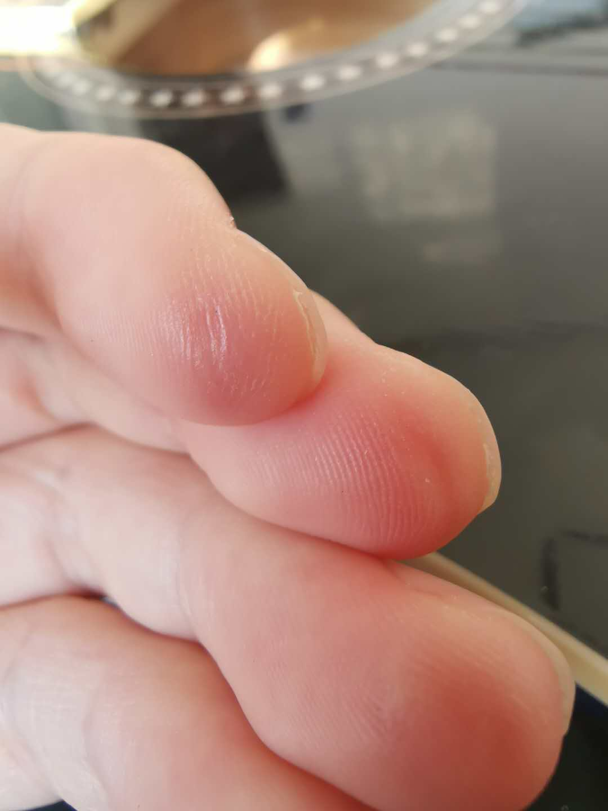
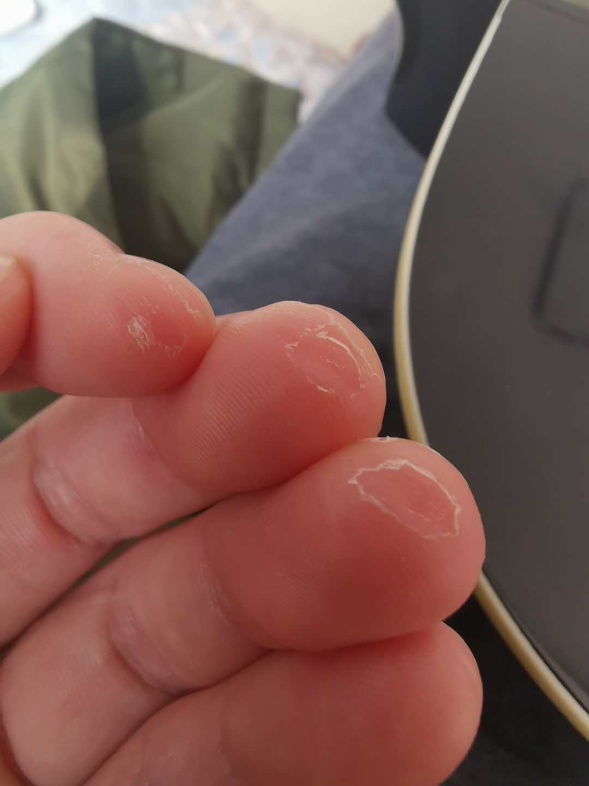
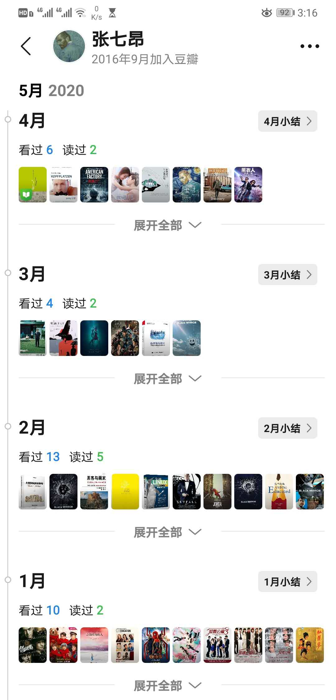

理直气壮做宅男的日子

这个寒假注定是印象深刻的。
当初放假打包想着精简行李的时候一定不会想到，此刻的我会为没有衣服穿而发愁。毕竟已经立夏了，我躺在床上，望着仅带的两件冬装，悔不当初。这只是这次疫情影响得很小的一个方面，更广泛的涉及到了生活方式、学习进度、精神层面以及人生方向。
生活方式
这是最直观的一个方面。本来便属于那种除了旅行和吃喝，不太愿意出去的人，这次疫情为了响应国家号召，理所当然的挖掘出百分百宅男属性，游戏、外卖、床三位一体，获得成就一个月不下楼，一个半月不理发与不刮胡子。由于没有束缚，作息也从11-7调到了3-11，获得和平精英荣耀皇冠，云顶之弈白金成就。枯燥。
最近意识到这种生活方式是非常不负责的，正在积极调整。发誓不熬没有意义的夜，不关心与我无关的事，将精力集中在需要的地方。待陌上花开，可缓缓归矣。
鸭绿江边骑行 学习进度
这是最惭愧的一个方面。三个月来，学习效率很低，计划容易被琐事打断，吉他还在坚持，虽然收效甚微，但逐渐意识到所有能力几乎都逃不过熟能生巧。自认为之前前进的动力大多来自外部的压力，这种是非常不稳定也不健康的，当对外界充耳不闻时便容易活在自我满足的状态中，这有清朝的前例在，是需要总结和改正的，下一步应该把内在的需求转化为学习的动力源泉，站得越高的人越是向上看的，所以要形成这种良性的内在循环促进提高。

幼稚->成熟 只有打开软件才会想起来把时间都丢去哪了 精神层面
这是最隐晦的一个方面。就算想得到也是不容易说清楚的。从每天醒来一睁眼就打开手机看昨天的增长人数，到后来的不再刻意关心的麻木。从每天期待各种有价值的新闻去抒发态度，到将新闻软件都卸载。从《后浪》到《非浪》。这三个月应该是我最悠闲的去思考一些东西的时光了。杨绛先生说过：你的主要的问题在于读书不多而想的太多。不得不说，先生的眼光还是准确。我的确就是这样，读书不多却总爱想入非非，也没有个拿得出手的结论。我是一个喜欢和别人争论对错，想要说服别人的人，这点可以说是偏执，在以往的生活中也容易碰壁，希望今后可以多吸收，少输出。
人生方向
这是最纠结的一个方面。可以说现在还在纠结，可能会一直下去。但我并不认为这样不好，人生就是充满可能性的，每一个阶段所朝的方向也只是这个阶段所拥有的，我不愿意没有纠结过就放弃任意一种可能，但对每个阶段的目标我都希望奔跑前进。最近放弃了做游戏和搞前端的想法，但可能只是近两年的放弃。也放弃了春招，选择了继续学习。如果可以，就人生而言，我希望我在做不规则运动，我不嫉妒直线的快速到达，也不羡慕曲线的平滑过渡。带着好奇和随性来摸索，即便没有归属也没有关系，只因我的眼想要看的更远，我的心可以容纳更多。
窗外的火烧云